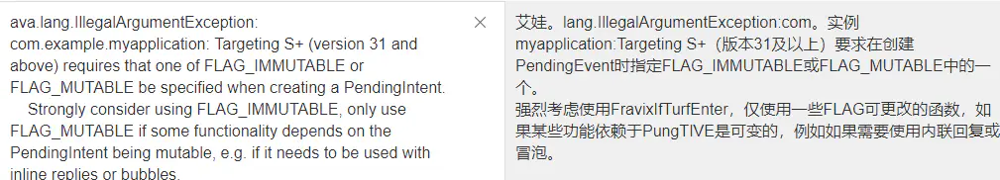

qcom qcm2290 bms移植过程
记录一下移植过程。
参考
编写AIDL文件
QSSI.12/frameworks/base/core/java/android/os/IPaxBms.aidl:
+package android.os;
/**
* @hide
*/
interface IPaxBms {
/**
* Set the provided set mode to device.
*
* @param mode: logical mode to set
* @return res: result of applying state transformation.
*/
void enableCharge();
void disableCharge();
void enablePowerPath();
void disablePowerPath();
void setTemporaryFullCharge(int charge);
}
Context定义变量
在 Context 里定义一个代表BMS服务的字符串:
frameworks/base/core/java/android/content/Context.java:
@ -5529,6 +5529,8 @@ public abstract class Context {
public static final String xxxBMS_SERVICE="xxxxxbms";
编写BMS服务
QSSI.12/frameworks/base/services/core/java/com/xxxxx/server/PaxBatteryManagerService.java:
public final class PaxBatteryManagerService extends SystemService {
//IPaxBms xxxxx_bms;
PaxBmsManager xxxxxBmsManager;
public PaxBatteryManagerService(Context context) {
super(context);
if(DEBUG)Log.d(TAG,"PaxBatteryManagerService");
mContext = context;
mBatteryManagerInternal = getLocalService(BatteryManagerInternal.class);
myReceiver = new BatteryReceiver();
mContext.registerReceiver(myReceiver, new IntentFilter(broadcastDel_DB));
mContext.registerReceiver(myReceiver, new IntentFilter(Intent.ACTION_BOOT_COMPLETED));//监听开机广播
mContext.registerReceiver(myReceiver, new IntentFilter(Intent.ACTION_SHUTDOWN));//监听关机广播
mContext.registerReceiver(myReceiver, new IntentFilter(ACTION_DISABLE));//监听工厂测试程序广播
mContext.registerReceiver(myReceiver, new IntentFilter(ACTION_ENABLE));//监听工厂测试程序广播
xxxxxBmsManager = (PaxBmsManager)mContext.getSystemService(Context.xxxBMS_SERVICE);
}
public void onStart() {
if(DEBUG)Log.d(TAG,"onStart");
am = (AlarmManager)mContext.getSystemService(ALARM_SERVICE);
PowerManager pm = (PowerManager) mContext.getSystemService(Context.POWER_SERVICE);
wl = pm.newWakeLock(PowerManager.PARTIAL_WAKE_LOCK, TAG);
wl.acquire();
//PaxBatteryThread1 pbthread = new PaxBatteryThread1();
PaxBatteryThread pbthread = new PaxBatteryThread();
pbthread.start();
}
注册BMS服务
注册
PaxBatteryManagerService服务，并执行startService，会调用服务中的onstart方法。注册静态服务
PaxBmsService，供服务调用接口。PaxBmsService是binder server端，PaxBmsManager是服务于PaxBmsService的binder client端，并给外部提供接口的。QSSI.12/frameworks/base/services/java/com/android/server/SystemServer.java:
+//ADD BEGIN by (xxx@xxxxx.com), 2022/11/01 add for BMS
+import com.android.server.xxxxxbms.PaxBmsService;
+import com.xxxxx.server.PaxBatteryManagerService;
+//ADD END by (xxx@xxxxx.com), 2022/11/01 add for BMS
/**
/**
* Entry point to {@code system_server}.
* Entry point to {@code system_server}.
@@ -1578,6 +1582,16 @@ public final class SystemServer implements Dumpable { @@ -1578,6 +1582,16 @@ public final class SystemServer implements Dumpable {
+ //ADD BEGIN by (xxx@xxxxx.com), 2022/11/01 add for BMS
+ t.traceBegin("StartmPaxBMSService");
+ try{
+ PaxBmsService mPaxBmsService = new PaxBmsService(context);
+ ServiceManager.addService("xxxxxbms", mPaxBmsService);
+ } catch(Throwable e){
+ reportWtf("starting xxxxxbms Service", e);
+ }
+ t.traceEnd();
+ //ADD END by (xxx@xxxxx.com), 2022/11/01 add for BMS
} catch (Throwable e) {
} catch (Throwable e) {
Slog.e("System", "******************************************");
Slog.e("System", "******************************************");
@@ -2704,6 +2718,11 @@ public final class SystemServer implements Dumpable { @@ -2704,6 +2718,11 @@ public final class SystemServer implements Dumpable {
t.traceBegin("StartMediaCommunicationService");
t.traceBegin("StartMediaCommunicationService");
mSystemServiceManager.startService(MEDIA_COMMUNICATION_SERVICE_CLASS);
mSystemServiceManager.startService(MEDIA_COMMUNICATION_SERVICE_CLASS);
t.traceEnd();
t.traceEnd();
+ //[FEATURE]-Add-BEGIN by (xxx@xxxxx.com), 2022/11/01, for start xxxxx Battery Manager service
+ t.traceBegin("PaxBatteryManagerService ");
+ mSystemServiceManager.startService(PaxBatteryManagerService.class);
+ t.traceEnd();
+ //[FEATURE]-Add-END by (xxx@xxxxx.com), 2022/11/01, for start xxxxx Battery Manager service
编写并注册PaxBmsManager类
QSSI.12/frameworks/base/core/java/android/app/SystemServiceRegistry.java:
+//ADD BEGIN by (xxx@xxxxx.com), 2022/11/01 add for BMS
import android.os.IPaxBms;
import android.app.PaxBmsManager;
//ADD BEGIN by (xxx@xxxxx.com), 2022/11/01 add for BMS
/**
/**
* Manages all of the system services that can be returned by {@link Context#getSystemService}.
* Manages all of the system services that can be returned by {@link Context#getSystemService}.
* Used by {@link ContextImpl}.
* Used by {@link ContextImpl}.
@@ -1449,7 +1454,18 @@ public final class SystemServiceRegistry { @@ -1449,7 +1454,18 @@ public final class SystemServiceRegistry {
ctx.mMainThread.getHandler());
ctx.mMainThread.getHandler());
}
}
});
});
//ADD BEGIN by (xxx@xxxxx.com), 2022/11/01 add for BMS
registerService(Context.xxxBMS_SERVICE, PaxBmsManager.class,
new CachedServiceFetcher<PaxBmsManager>() {
@Override
public PaxBmsManager createService(ContextImpl ctx)
throws ServiceNotFoundException {
IBinder b = ServiceManager.getService("xxxxxbms");
IPaxBms service = IPaxBms.Stub.asInterface(b);
return PaxBmsManager.getInstance();
}
});
//ADD END by (xxx@xxxxx.com), 2022/11/02 add for BMS
QSSI.12/frameworks/base/core/java/android/app/PaxBmsManager.java:
+/* * Copyright (C) 2008 The Android Open Source Project
*
* Licensed under the Apache License, Version 2.0 (the "License");
* you may not use this file except in compliance with the License.
* You may obtain a copy of the License at
*
* http://www.apache.org/licenses/LICENSE-2.0
*
* Unless required by applicable law or agreed to in writing, software
* distributed under the License is distributed on an "AS IS" BASIS,
* WITHOUT WARRANTIES OR CONDITIONS OF ANY KIND, either express or implied.
* See the License for the specific language governing permissions and
* limitations under the License.
*/
package android.app;
import android.content.Context;
import android.util.Log;
import android.annotation.NonNull;
import android.annotation.Nullable;
import android.os.ServiceManager.ServiceNotFoundException;
import android.annotation.SuppressLint;
import android.os.ServiceManager;
import android.os.RemoteException;
import android.annotation.SystemService;
import android.os.Binder;
import android.os.IBinder;
import android.compat.annotation.UnsupportedAppUsage;
import android.os.IPaxBms;
import java.util.Objects;
@SystemService(Context.xxxBMS_SERVICE)
public class PaxBmsManager {
//PaxBMSService mBMS;
private static final String TAG = "PaxBMSManager";
private static PaxBmsManager sInstance;
private IPaxBms mBMS;
private Context mContext;
private final static Object syncObj = new Object();
/**
* @hide
*/
private PaxBmsManager(IPaxBms iBms){
Log.d(TAG, "PaxBmsManager created");
mBMS = iBms;
}
/**
* Gets an instance of the PaxBmsManager manager.
*
* @return The PaxBmsManager manager instance.
* @hide
*/
@UnsupportedAppUsage
public static @Nullable PaxBmsManager getInstance() {
synchronized (syncObj) {
if (sInstance == null) {
try {
IBinder b = ServiceManager.getServiceOrThrow(Context.xxxBMS_SERVICE);
sInstance = new PaxBmsManager(IPaxBms.Stub.asInterface(b));
}catch (ServiceNotFoundException e){
e.printStackTrace();
}
}
return sInstance;
}
}
//@SuppressLint("NewApi")
public void enableCharge(){
Log.d(TAG,"enableCharge");
try {
mBMS.enableCharge();
} catch (RemoteException e){
e.printStackTrace();
}
}
//@SuppressLint("NewApi")
public void disableCharge(){
Log.d(TAG,"disableCharge");
try {
mBMS.disableCharge();
} catch (RemoteException e){
e.printStackTrace();
}
}
//@SuppressLint("NewApi")
public void enablePowerPath(){
Log.d(TAG,"enablePowerPath");
try {
mBMS.enablePowerPath();
} catch (RemoteException e){
e.printStackTrace();
}
}
//@SuppressLint("NewApi")
public void disablePowerPath(){
Log.d(TAG,"disablePowerPath");
try {
mBMS.disablePowerPath();
} catch (RemoteException e){
e.printStackTrace();
}
}
//@SuppressLint("NewApi")
public void setTemporaryFullCharge(int fullsoc) {
Log.d(TAG,"setFullSoc = "+fullsoc);
try {
mBMS.setTemporaryFullCharge(fullsoc);
} catch (RemoteException e){
e.printStackTrace();
}
}
}
编写PaxBmsService类
PaxBmsService 类主要是充电接口实现类，主要调用JNI。
/* * Copyright (C) 2008 The Android Open Source Project
*
* Licensed under the Apache License, Version 2.0 (the "License");
* you may not use this file except in compliance with the License.
* You may obtain a copy of the License at
*
* http://www.apache.org/licenses/LICENSE-2.0
*
* Unless required by applicable law or agreed to in writing, software
* distributed under the License is distributed on an "AS IS" BASIS,
* WITHOUT WARRANTIES OR CONDITIONS OF ANY KIND, either express or implied.
* See the License for the specific language governing permissions and
* limitations under the License.
*/
package com.android.server.xxxxxbms;
import android.app.ActivityManager;
import android.content.Context;
import android.os.Handler;
import android.os.IBinder;
import android.os.Message;
import android.os.PowerManager;
import android.os.Trace;
import android.provider.Settings;
import android.util.Slog;
import android.view.SurfaceControl;
import android.util.Log;
import android.content.Context;
import com.android.server.SystemService;
import android.os.IPaxBms;
import android.os.SystemProperties;
import android.os.RemoteException;
import android.annotation.SuppressLint;
public class PaxBmsService extends IPaxBms.Stub {
static final String TAG = "PaxBMSService";
static final boolean DEBUG = false;
private final Context mContext;
public static final String TemporaryFullCharge = "sys.bms.temporary_full_charge";
public PaxBmsService(Context context) {
super();
mContext = context;
}
// @SuppressLint("NewApi")
@Override
public void enableCharge() {
Log.d(TAG,"enableCharge");
try {
enableCharge_native();
} catch (Exception e){
e.printStackTrace();
} finally {
Trace.traceEnd(Trace.TRACE_TAG_POWER);
}
}
//@SuppressLint("NewApi")
@Override
public void disableCharge() {
Log.d(TAG,"disableCharge ");
try {
disableCharge_native();
} catch (Exception e){
e.printStackTrace();
}finally {
Trace.traceEnd(Trace.TRACE_TAG_POWER);
}
}
//@SuppressLint("NewApi")
@Override
public void enablePowerPath() {
Log.d(TAG,"enablePowerPath ");
try {
enablePowerPath_native();
} catch (Exception e){
e.printStackTrace();
}finally {
Trace.traceEnd(Trace.TRACE_TAG_POWER);
}
}
//@SuppressLint("NewApi")
@Override
public void disablePowerPath() {
Log.d(TAG,"disablePowerPath");
try {
disablePowerPath_native();
} catch (Exception e){
e.printStackTrace();
}finally {
Trace.traceEnd(Trace.TRACE_TAG_POWER);
}
}
//@SuppressLint("NewApi")
@Override
public void setTemporaryFullCharge(int charge) {
SystemProperties.set(TemporaryFullCharge,String.valueOf(charge));
}
public void onStart() {
Slog.e(TAG, "onStart");
}
static native void enableCharge_native();
static native void disableCharge_native();
static native void enablePowerPath_native();
static native void disablePowerPath_native();
}
调用JNI(ioctrl)
QSSI.12/frameworks/base/services/core/jni/onload.cpp注册JNI:
--- a/QSSI.12/frameworks/base/services/core/jni/onload.cpp
+++ b/QSSI.12/frameworks/base/services/core/jni/onload.cpp
@@ -64,6 +64,9 @@ int register_android_server_GpuService(JNIEnv* env);
int register_android_server_stats_pull_StatsPullAtomService(JNIEnv* env);
int register_android_server_sensor_SensorService(JavaVM* vm, JNIEnv* env);
int register_android_server_ActivityTriggerService(JNIEnv* env);
+//ADD BEGIN by xxx@xxxxx.com add for BMS, 2022/11/02
+int register_android_server_xxxxxbms_PaxBmsService(JNIEnv* env);
+//ADD END by xxx@xxxxx.com add for BMS, 2022/11/02
};
using namespace android;
@@ -121,5 +124,8 @@ extern "C" jint JNI_OnLoad(JavaVM* vm, void* /* reserved */)
register_android_server_stats_pull_StatsPullAtomService(env);
register_android_server_sensor_SensorService(vm, env);
register_android_server_ActivityTriggerService(env);
+ //ADD BEGIN by xxx@xxxxx.com add for BMS, 2022/11/02
+ register_android_server_xxxxxbms_PaxBmsService(env);
+ //ADD END by xxx@xxxxx.com add for BMS, 2022/11/02
return JNI_VERSION_1_4;
}
QSSI.12/frameworks/base/services/core/jni/com_android_server_xxxxxbms_PaxBmsService.cppJNI如下调用ioctrl直接操作驱动：
/*
* Copyright (C) 2009 The Android Open Source Project
*
* Licensed under the Apache License, Version 2.0 (the "License");
* you may not use this file except in compliance with the License.
* You may obtain a copy of the License at
*
* http://www.apache.org/licenses/LICENSE-2.0
*
* Unless required by applicable law or agreed to in writing, software
* distributed under the License is distributed on an "AS IS" BASIS,
* WITHOUT WARRANTIES OR CONDITIONS OF ANY KIND, either express or implied.
* See the License for the specific language governing permissions and
* limitations under the License.
*/
#define LOG_TAG "PaxBMSService"
#include "jni.h"
#include <nativehelper/JNIHelp.h>
#include "android_runtime/AndroidRuntime.h"
//#include <android/hardware/xxxxx_bms/1.0/IPaxBMS.h>
//#include <android/hardware/xxxxx_bms/1.0/types.h>
#include <android-base/chrono_utils.h>
#include <utils/misc.h>
#include <utils/Log.h>
#include <map>
#include <stdio.h>
#include <stdlib.h>
#include <errno.h>
#include <unistd.h>
#include <linux/ioctl.h>
#include <array>
#include <memory>
#include <fcntl.h>
#include <string.h>
#include <sys/epoll.h>
#include <sys/types.h>
#define xxx_BMS_DEV "/dev/xxxxx_bms"
#define SET_CHG_EN _IOW('b', 1, int)
#define SET_POWER_PATH _IOW('b', 2, int)
namespace android {
static void enableCharge_native (
JNIEnv* /* env */,
jobject /* clazz */,
jint mode) {
int fd;
int res;
int en = 1;
fd = open(xxx_BMS_DEV, O_RDWR);
if (fd <0) {
ALOGE("Unable to open /dev/xxxxx_bms");
}
res = ioctl(fd, SET_CHG_EN, &en);
if (res < 0) {
ALOGE("ioctl->SET_CHG_EN failed:%d", res);
}
ALOGD("ioctl->SET_CHG_EN open success");
close(fd);
}
static void disableCharge_native(
JNIEnv* /* env */,
jobject /* clazz */
) {
int fd;
int res;
int en = 0;
fd = open(xxx_BMS_DEV, O_RDWR);
if (fd <0) {
ALOGE("Unable to open /dev/xxxxx_bms");
}
res = ioctl(fd, SET_CHG_EN, &en);
if (res < 0) {
ALOGE("ioctl->SET_CHG_EN failed:%d", res);
}
ALOGD("ioctl->SET_CHG_EN open success");
close(fd);
}
static void enablePowerPath_native(
JNIEnv* /* env */,
jobject /* clazz */
) {
int fd;
int res;
int en = 1;
fd = open(xxx_BMS_DEV, O_RDWR);
if (fd <0) {
ALOGE("Unable to open /dev/xxxxx_bms");
}
res = ioctl(fd, SET_POWER_PATH, &en);
if (res < 0) {
ALOGE("ioctl->SET_CHG_EN failed:%d", res);
}
ALOGD("ioctl->SET_CHG_EN open success");
close(fd);
}
static void disablePowerPath_native(
JNIEnv* /* env */,
jobject /* clazz */
) {
int fd;
int res;
int en = 0;
fd = open(xxx_BMS_DEV, O_RDWR);
if (fd <0) {
ALOGE("Unable to open /dev/xxxxx_bms");
}
res = ioctl(fd, SET_POWER_PATH, &en);
if (res < 0) {
ALOGE("ioctl->SET_CHG_EN failed:%d", res);
}
ALOGD("ioctl->SET_CHG_EN open success");
close(fd);
}
static const JNINativeMethod method_table[] = {
{ "enableCharge_native", "()V", (void*)enableCharge_native },
{ "disableCharge_native", "()V", (void*)disableCharge_native },
{ "enablePowerPath_native", "()V", (void*)enablePowerPath_native },
{ "disablePowerPath_native", "()V", (void*)disablePowerPath_native },
};
int register_android_server_xxxxxbms_PaxBmsService(JNIEnv *env) {
ALOGE("register_android_server_xxxxxbms_PaxBmsService\n");
return jniRegisterNativeMethods(env, "com/android/server/xxxxxbms/PaxBmsService",
method_table, NELEM(method_table));
}
};
调用 PaxBmsService类
QSSI.12/frameworks/base/services/core/java/com/xxxxx/server/PaxBatteryManagerService.javaPaxBmsService类被PaxBatteryManagerService调用方法如下:
xxxxxBmsManager = (PaxBmsManager)mContext.getSystemService(Context.xxxBMS_SERVICE);
public int setChargeState(int state){
try {
Log.d(TAG,"setChargeState: "+state);
if(state == CHARGEING){
xxxxxBmsManager.enableCharge();
}else{
xxxxxBmsManager.disableCharge();
}
}
}
make update-api更新接口
须要执行 make update-api，更新接口，会将PaxBmsManager新增的接口和新增Context变量加进去：
QSSI.12/frameworks/base/core/api/current.txt
--- a/QSSI.12/frameworks/base/core/api/current.txt
+++ b/QSSI.12/frameworks/base/core/api/current.txt
@@ -6334,6 +6334,14 @@ package android.app {
field public final int suppressedVisualEffects;
}
+ public class PaxBmsManager {
+ method public void disableCharge();
+ method public void disablePowerPath();
+ method public void enableCharge();
+ method public void enablePowerPath();
+ method public void setTemporaryFullCharge(int);
+ }
+
public final class PendingIntent implements android.os.Parcelable {
method public void cancel();
method public int describeContents();
@@ -10669,6 +10677,7 @@ package android.content {
field public static final String NFC_SERVICE = "nfc";
field public static final String NOTIFICATION_SERVICE = "notification";
field public static final String NSD_SERVICE = "servicediscovery";
+ field public static final String xxxBMS_SERVICE = "xxxxxbms";
field public static final String PEOPLE_SERVICE = "people";
field public static final String PERFORMANCE_HINT_SERVICE = "performance_hint";
field public static final String POWER_SERVICE = "power";
增加SELINUX权限
--- a/QSSI.12/system/sepolicy/prebuilts/api/31.0/private/file.te
+++ b/QSSI.12/system/sepolicy/prebuilts/api/31.0/private/file.te
@@ -66,4 +66,5 @@ type kvm_device, dev_type;
#xxx BMS
type sysfs_battery_warning, fs_type, sysfs_type;
type vendor_sysfs_battery_supply, sysfs_type, fs_type;
-type vendor_sysfs_usb_supply, sysfs_type, fs_type;
\ No newline at end of file
+type vendor_sysfs_usb_supply, sysfs_type, fs_type;
+type xxxxx_bms_device, dev_type, mlstrustedobject;
\ No newline at end of file
diff --git a/QSSI.12/system/sepolicy/prebuilts/api/31.0/private/file_contexts b/QSSI.12/system/sepolicy/prebuilts/api/31.0/private/file_contexts
index d711c80db20..67eca16d06e 100755
--- a/QSSI.12/system/sepolicy/prebuilts/api/31.0/private/file_contexts
+++ b/QSSI.12/system/sepolicy/prebuilts/api/31.0/private/file_contexts
@@ -843,3 +843,6 @@
#[FEATURE]-Add-BEGIN by tangyunhua@xxxxx.com, 2022/11/02, for mac address
/system/bin/macaddress u:object_r:macaddress_exec:s0
#[FEATURE]-Add-END by tangyunhua@xxxxx.com, 2022/11/02, for mac address
+#[FEATURE]-Add-BEGIN by xxx@xxxxx.com, 2022/11/04, for BMS
+/dev/xxxxx_bms u:object_r:xxxxx_bms_device:s0
+#[FEATURE]-Add-END by xxx@xxxxx.com, 2022/11/04, for BMS
diff --git a/QSSI.12/system/sepolicy/prebuilts/api/31.0/private/xxxxx_bms_service.te b/QSSI.12/system/sepolicy/prebuilts/api/31.0/private/xxxxx_bms_service.te
new file mode 100755
index 00000000000..67efced1679
--- /dev/null
+++ b/QSSI.12/system/sepolicy/prebuilts/api/31.0/private/xxxxx_bms_service.te
@@ -0,0 +1 @@
+type xxxxx_bms_service, app_api_service, system_server_service, service_manager_type;
\ No newline at end of file
diff --git a/QSSI.12/system/sepolicy/prebuilts/api/31.0/private/system_server.te b/QSSI.12/system/sepolicy/prebuilts/api/31.0/private/system_server.te
index 3b510c73ad7..e23007a691c 100755
--- a/QSSI.12/system/sepolicy/prebuilts/api/31.0/private/system_server.te
+++ b/QSSI.12/system/sepolicy/prebuilts/api/31.0/private/system_server.te
@@ -1335,6 +1335,10 @@ allow system_server surfaceflinger_exec:file r_file_perms;
allow system_server logkit-init:binder call;
+#BMS
+allow system_server xxxxx_bms_service:service_manager { find add };
+allow system_server xxxxx_bms_device:chr_file { ioctl read open write };
增加dev节点权限
--- a/QSSI.12/vendor/xxxxx/initrc/init.A665x.common.rc
+++ b/QSSI.12/vendor/xxxxx/initrc/init.A665x.common.rc
@@ -7,6 +7,11 @@ on boot
#[feature]-add-begin xielianxiong@xxxxx.com,20221026,for rpc uart suspend
chmod 0777 /sys/devices/platform/soc/4a84000.qcom,qup_uart/power/control
#[feature]-add-end xielianxiong@xxxxx.com,20221026,for rpc uart suspend
+ #[FEATURE]-Add-BEGIN by xxx@xxxxx.com, 2022/11/04, for BMS
+ chmod 0777 /dev/xxxxx_bms
+ chown system system /dev/xxxxx_bms
+ #[FEATURE]-Add-END by xxx@xxxxx.com, 2022/11/04, for BMS
问题点
1.开机后不断重启
首先看打印如下：
--------- beginning of crash
10-20 10:13:11.271 1662 2551 E AndroidRuntime: *** FATAL EXCEPTION IN SYSTEM PROCESS: Thread-18
10-20 10:13:11.271 1662 2551 E AndroidRuntime: java.lang.IllegalArgumentException: android: Targeting S+ (version 31 and above) requires that one of FLAG_IMMUTABLE or FLAG_MUTABLE be specified when creatin
g a PendingIntent.
10-20 10:13:11.271 1662 2551 E AndroidRuntime: Strongly consider using FLAG_IMMUTABLE, only use FLAG_MUTABLE if some functionality depends on the PendingIntent being mutable, e.g. if it needs to be used wi
th inline replies or bubbles.
10-20 10:13:11.271 1662 2551 E AndroidRuntime: at android.app.PendingIntent.checkFlags(PendingIntent.java:378)
10-20 10:13:11.271 1662 2551 E AndroidRuntime: at android.app.PendingIntent.getBroadcastAsUser(PendingIntent.java:648)
10-20 10:13:11.271 1662 2551 E AndroidRuntime: at android.app.PendingIntent.getBroadcast(PendingIntent.java:635)
10-20 10:13:11.271 1662 2551 E AndroidRuntime: at com.xxxxx.server.PaxBatteryManagerService.setAlarm(PaxBatteryManagerService.java:537)
10-20 10:13:11.271 1662 2551 E AndroidRuntime: at com.xxxxx.server.PaxBatteryManagerService$PaxBatteryThread.run(PaxBatteryManagerService.java:222)
出错在
setAlarm函数，跟进代码如下：
class PaxBatteryThread extends Thread {
@Override
public void run() {
setAlarm(TIMEOUT_X_HOUR);//开机后设置一次 222行
}
···省略···
public void setAlarm(long period){
PendingIntent pi = PendingIntent.getBroadcast(mContext,rc,intent,PendingIntent.FLAG_UPDATE_CURRENT);
am.setAndAllowWhileIdle(AlarmManager.RTC_WAKEUP,System.currentTimeMillis()+period,pi);
}
解决方案： 是Android12版本问题。

官方推荐添加：FLAG_IMMUTABLE，看个人需求：
PendingIntent pi = PendingIntent.getBroadcast(mContext,rc,intent,PendingIntent.FLAG_UPDATE_CURRENT | PendingIntent.FLAG_IMMUTABLE);